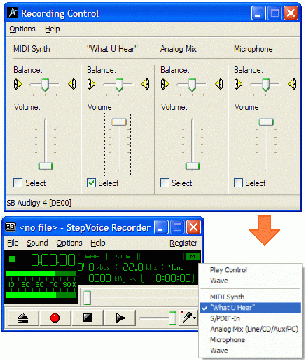

The program sound mixer is used for selecting a sound
card stream the StepVoice Recorder will record from.
It has the same lines as in the
Windows (system) mixer. Press the  button in the main window to open the stream selection menu.
button in the main window to open the stream selection menu.
|  |
The main recording streams are:
- Microphone. Allows to record from a microphone when selected;
- Line In. Recording from any external sound device like tape recorders;
- Stereo Mix. Used for recording any sounds currently played from your sound card (online radio played in WinAmp or RealPlayer, etc.). Producers name this stream differently, so here are some other possible names: "What U hear", "Output", "Mixer", "Wave", "Sum".